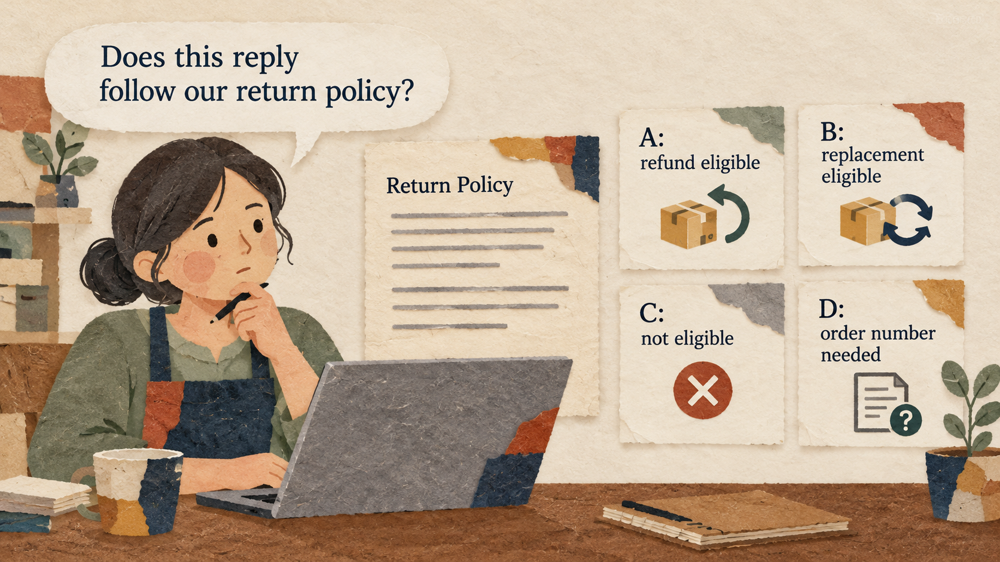

Situation
The problem
A small online shop receives return questions. A broad AI prompt may sound friendly but give an incorrect answer. Students need a way to improve an answer and check it against the policy.

3 hours: 50-minute lesson, 10-minute break, 50-minute guided practice, 10-minute break, 50-minute applied practice, and 10-minute wrap-up.
A small online shop receives return questions. A broad AI prompt may sound friendly but give an incorrect answer. Students need a way to improve an answer and check it against the policy.
Diagnose one output weakness, change one prompt instruction, and compare the result against the same source policy.
Practice material: Use the practice material supplied in the session Markdown.
Do not replace missing information with guesses.
Work through the explanation before comparing prompts or starting the exercise.
Work through the explanation before comparing prompts or starting the exercise.
These examples come from the current session scenario.
Reply to these customers.
Make every customer happy and approve each request.
Keep the source, task, constraints, and output check visible.
Use only the policy and customer messages below. For each case, label the result Eligible, Not eligible under the stated policy, or Information needed. Give one policy reason. Do not invent exceptions.
Draft a separate reply for each customer using only the policy. Start with the result, give one brief reason, and state the next step. If information is missing, ask for it without promising approval. Keep each reply under 50 words.
Use the complete case and instructions from the session Markdown.
Use the complete case and instructions from the session Markdown.
Check the output before sharing or acting on it.